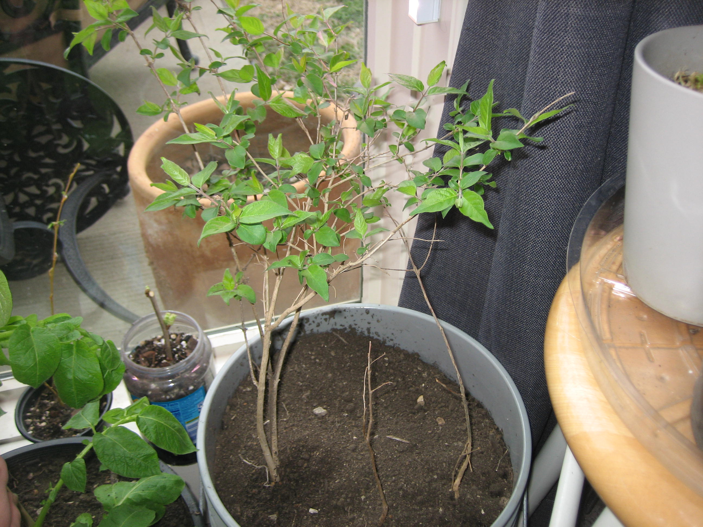

plants monthly progress
mar 1st 2026
everything you see here that is a non-trad houseplant, ie anything like an apple tree, papaya, almond, mango, and anything else of the sort, i obtained by eating the fruit or nut or item and harvesting the seeds. the first I ever did was the mango, who now is 10 inches tall and has 5 huge leaves. i will continue on this endeavor. running out of fruit/veg to buy at the store lol.

orchid cactus

alocasia zebrina

peperomia

polka dot begonia

inchplant wandering dude

mango

poat and poatette

fairy castle cactus

chinese money plant

philodendron micans

OG spider plant

swedish ivy

golden piothos

string of hearts

snake

dumb cane

bamboo

x4 spider (split+baby)

2022's spider babies :3

pothons n joy

string of pearls

dwarf jade bonsai

string of dolphins

x5 pothos/phil babies

yard creeper

(from L to R, going in rows, like reading a book) peperomia propagation, swedish ivy propagation, cherry, carrot top, misc lemons, galic, leftover apple/pear, roma tomato, kiwi, dragongruit, papaya, cherry tomato, bonus cherries, bonus apples

(same rule as above) x5 wandering willow cuttings, strawberry, x10 honeycrisp, starfruit, date, peanuts, avocado pits, sweet potato, pineapple

x3 varieties tobacco, baggies = germinating

plastic bag on the edge is a fucking coconut dawg :lol:

(crate a, same rule as above) x2 barlett pear, black walnut, x2 honeycrisp apple, x2 popcorn, almond tree, mango v2, lemon funky, lemon, lemon

(crate b, same rule as above) x2 black sunflowers, red bell peppers, OG avocado, leftover corn, white onions, OG honeycrisp apple tree)

avocado, carrot top, acrons

x2 var wandering willows

x2 ? sapling found at u****, red oak from ebay